OVA Deployment Guide
Introduction
This guide covers the steps required to set up a Private Cloud deployment of the Menlo Security Central Manager, Web Isolation, and Email Isolation appliances.
Menlo Security uses an encrypted channel to do processing and relies on valid certificates for creating the channel. It's important to replace the self-signed certificate that is used during installation with a certificate generated by a trusted certificate authority. In most cases, this is created by the Active Directory server that manages user desktops.
Note
Ensure your system and environment meet the requirements listed in installation-prerequisites.dita. That document also lists the network configuration parameters required to successfully deploy the components. Also, it's important each appliance have a unique hostname and IP address.
The following topics are discussed below:
???
???
???
???
???
???
???
???
???
???
???
???
Deployment Overview
The most basic Private Cloud deployment of the Menlo Security Isolation Platform (MSIP) is the deployment of a single Web Isolation appliance. In this scenario, the Web Isolation appliance allows pre-pend or proxy connections directly to the appliance, implements only an Isolate-All policy, and allows you to send logs out to another device via syslog. Each isolation node is fully autonomous and cannot share connections, cookies, etc.
To have the following features, you must install a Central Manager appliance as well as a Web Isolation appliance (Isolation Standalone or Isolation Master and Isolation Worker).
See Dashboard status
Centrally manage a granular policy (e.g., block social networking sites, isolate uncategorized sites, allow sports sites, etc.)
Implement Document Isolation
View logs natively
Finally, for a Private Cloud Email Isolation deployment, you must have both a Central Manager appliance and deploy the necessary Email Isolation appliances (Transform and Restore VMs).
Creating Appliances
The following sections provide steps for creating simple appliances for use in an On-Prem deployment. If a Central Manager will be used, it should be created before any Web or Email Isolation appliances are created. Basic bootstrapping is done with the OVF template parameters to get the appliance up and running; additional network configuration will be done using the browser interface in the ??? section below.
Deploy an Appliance without vCenter
Turn on the appliance and wait for the boot to complete. The appliance goes in a "provisional state".
Log into the console with admin credentials and confirm the following message appears:
Appliance is uninitialized. [1] Isolation Standalone [2] Isolation Master [3] Isolation Worker [4] Email Processor [5] Attachment Worker [6] Central Manager Enter mode:
Enter the mode for the desired appliance type (usually the Central Manager is created first). The system restarts.
Continue with configuration. See ???.
Create a Central Manager Appliance (VMware)
Log into VMware Virtual Center.
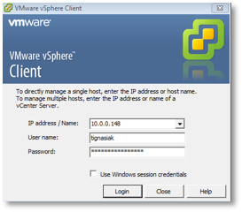Use the OVF Template wizard to create a new appliance (File -> Deploy OVF Template...).
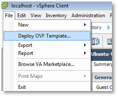Click the Browse button and select the Menlo Security OVA file to use as a source file. The same OVA file is used for all three installation types (Central Manager, Web Isolation, and Email Isolation). Click Open to choose the file, and click Next > to continue.
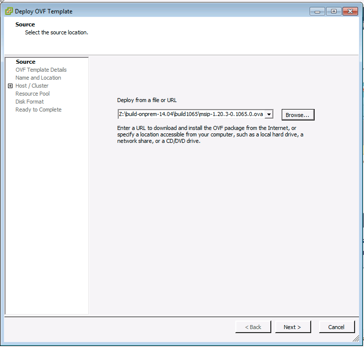The next screen provides information about the virtual appliance. Confirm your installation disk has sufficient storage for the thick provisioned size on disk requirements, and click Next >.
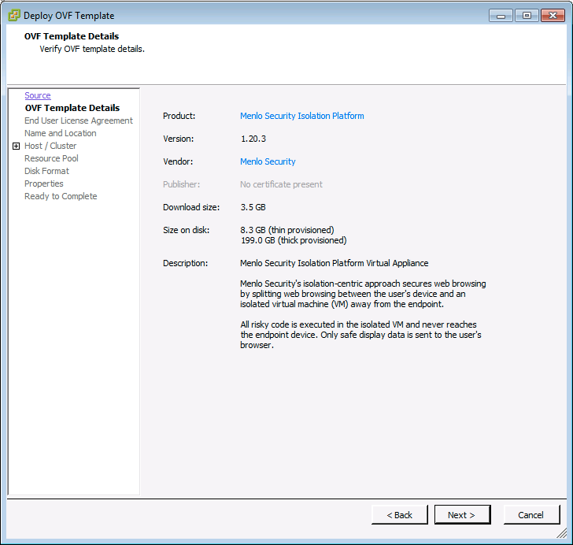Read the End User License Agreement on the screen, and click the Accept button. Then click Next >.
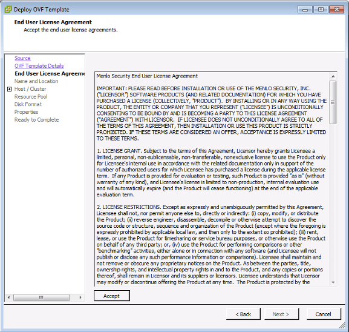Enter a name for the appliance, and click Next >.
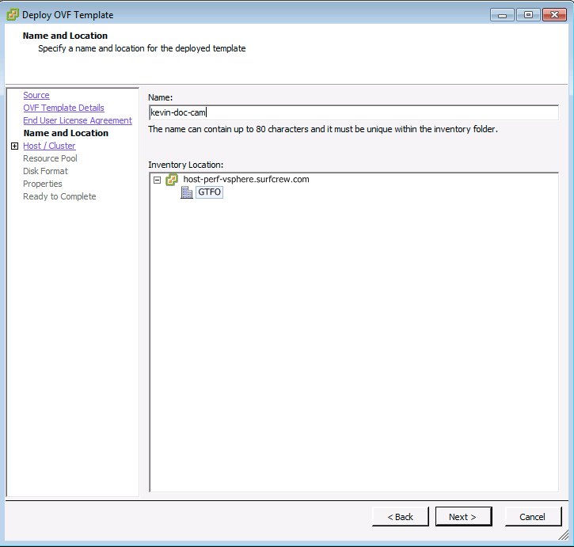Select a location that has sufficient storage for the appliance. No special drive type is required. Click Next > to continue.
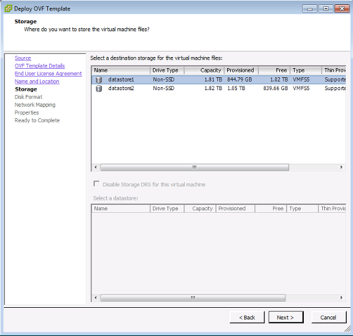Select the disk format to use. To immediately reserve the required disk space, use Thick Provision Lazy Zeroed (recommended); for testing or POC purposes, use Thin Provision. Click Next > when ready.
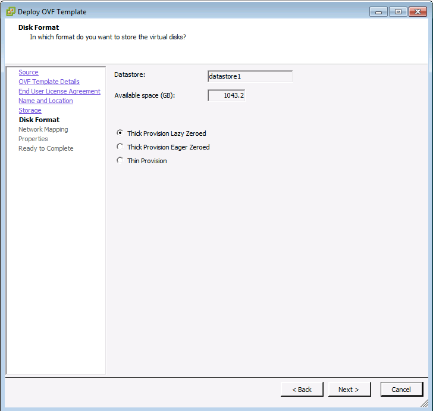Choose the network to use in the Destination Networks column; there is only a single virtual NIC available for the template. This network will be used for both management and data (user) traffic. Future versions will split this traffic into different NICs. Click Next > to continue.
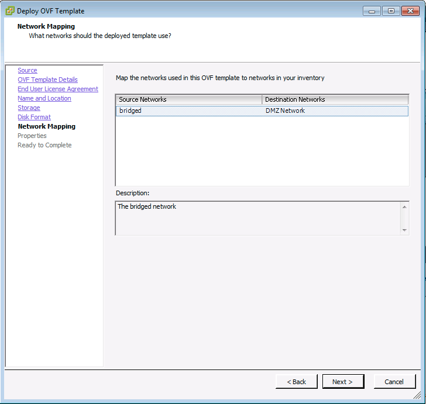The Properties screen provides customization specific to the MSIP appliance. Configure the following, and then click Next > to continue:
Install Type: Select Central Manager from the menu. The Central Manager will manage both web and email isolation appliances (installed on additional virtual machines).
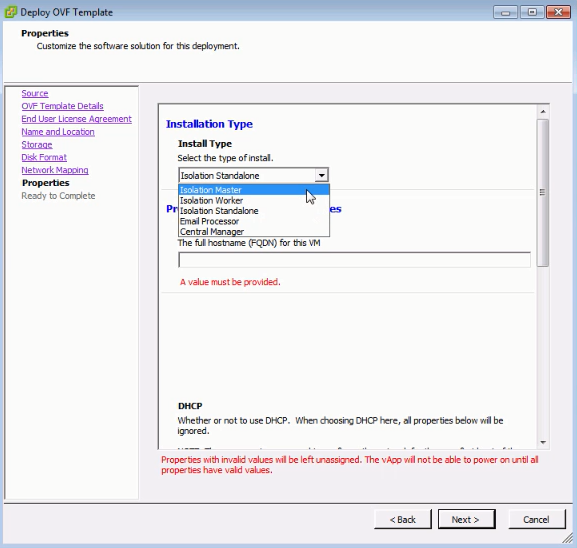Hostname: Enter the full hostname (A-record type).
Static IP Address: Enter the IP address associated with the hostname.
Netmask
Default Gateway
Note
If using DHCP instead of Static IP, select the DHCP checkbox. The Networking properties below the checkbox are ignored. Hardware appliances simply use DHCP and there is no need to select a role (it is built into the appliance from the factory.)
DNS Servers: Enter a comma separated list of DNS servers for the VM. This is ignored if DHCP is in use.
The Management Registration (Optional) section is not relevant for a Central Manager deployment.
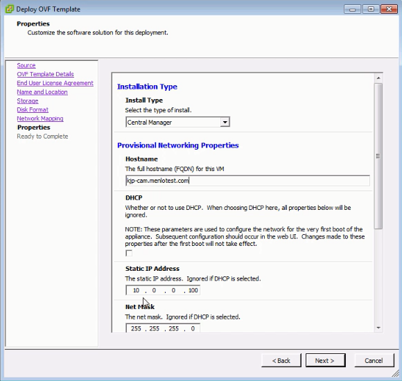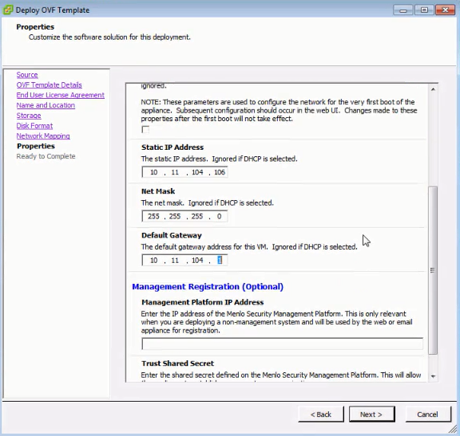Review the setup parameters, click the Power on after deployment checkbox, and then click the Finish button to create the appliance.
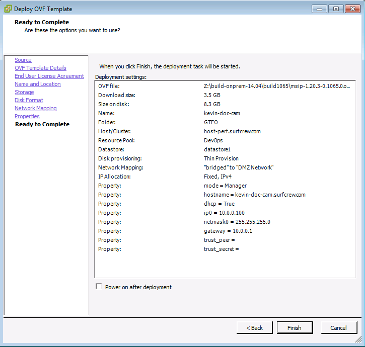Deployment takes a few minutes. A progress window appears during deployment, and another window appears when the appliance is ready and can be logged into.
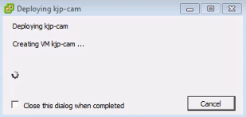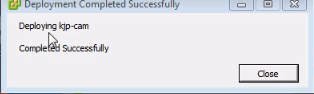
Create a Web Isolation Appliance: Isolation Master and Isolation Worker (VMware)
Perform Steps 1-9 in ???, using a unique name for the Web Isolation appliance, to deploy an OVF Template.
Note
The same .ova file is used for all three appliances.
The Properties screen provides customization specific to the appliance. Configure the following:
Install Type: Select Web Isolation from the menu.
Hostname: Enter a different hostname (A-record type) for web isolation. In the background the A-record is associated with an xhr- record of CNAME type.
Static IP Address: Enter the IP address associated with the web isolation hostname.
Net Mask (same as Central Manager)
Default Gateway (same as Central Manager)
Management Registration (Optional): If you want the Web Isolation appliance to register itself with the Central Manager immediately, enter the IP of the manager as well as the pre-defined shared secret. If you haven't already configured a shared secret on the manager, leave this section blank and add the appliance from the manager screen.
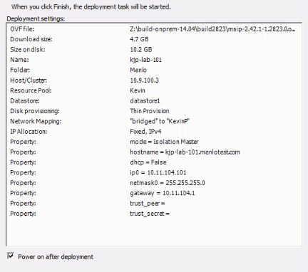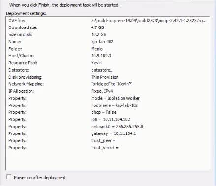Review the setup parameters, click the Power on after deployment checkbox, and then click the Finish button to create the appliance. Deployment takes a few minutes.
Create an Email Isolation Appliance (VMware)
Perform Steps 1-9 in ???, using a unique name for the Email Isolation appliance, to deploy an OVF Template.
Note
The same .ova file is used for all three appliances.
The Properties screen provides customization specific to the appliance. Configure the following:
Install Type: Select Email Isolation from the menu.
Hostname: Enter a different hostname (A-record type) for email isolation. In the background the A-record is associated with an xhr- record of CNAME type.
Static IP Address: Enter the IP address associated with the web isolation hostname.
Net Mask (same as Central Manager)
Default Gateway (same as Central Manager)
Management Registration (Optional): If you want the Email Isolation appliance to register itself with the Central Manager immediately, enter the IP of the manager as well as the pre-defined shared secret. If you haven't already configured a shared secret on the manager, leave this section blank and add the appliance from the manager screen.
Review the setup parameters, click the Power on after deployment checkbox, and then click the Finish button to create the appliance. Deployment takes a few minutes.
If you intend to use the Isolate + Safe PDF attachment policy or the Attachment Analysis feature, you should repeat the steps above to deploy an Attachment Worker appliance. This node should be added to the same group as the Email Processor appliances in the Central Manager. The relationship between Transform Email Isolation Appliance and Attachment worker appliance is 1-N; the Transform node is aware of all available attachment workers and does load balancing among them.
Note
Note that Attachment Analysis is a licensed feature. Most customers should skip this step. Contact Menlo Security for more information before deploying this type of node.
Creating Oracle VM Appliances
The procedure for deploying Oracle VMs for the Menlo Security Central Manager, Web Isolation or Email appliances is similar to VMware. However, with an Oracle deployment you will leverage the Menlo appliance terminal in order to set the appropriate role (Manager, Web, Email). The procedure is described below.
From the Repositories tab, select the Virtual Appliances folder of the desired repository in the left-hand pane and then click on the Import Virtual Appliance… button from the toolbar at the top of the right-hand pane.
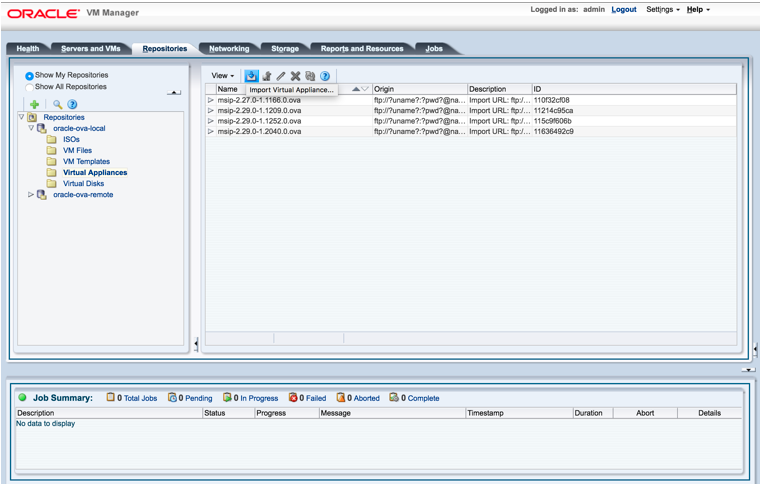Enter the URI to the OVA image to be imported (i.e., replace Enter URI of OVA image text in the following figure):
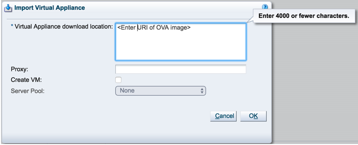Once the OVA has been successfully imported, select its entry from the list in the right-hand pane and click on the Create Virtual Machine from the toolbar at the top of the right-hand pane:
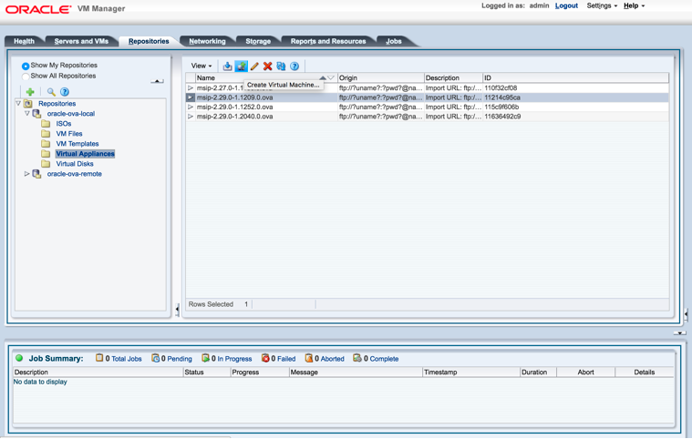Select the desired Server Pool within which to create the virtual machine and then click OK:
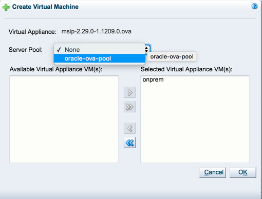Once the virtual machine has been successfully created, it will appear on the Servers and VMs tab when the specified Server Pool is selected in the left-hand pane and the Perspective is set to Virtual Machines in the right-hand pane:
Configuring Appliances
The following sections provide the steps for completing the configuration of new appliances using the Dashboard.
Central Manager Appliance Configuration
Obtain the IP address for your appliance.
Note
If using a hardware appliance, connect the Ethernet cable to the appliance as shown below to get the IP address. The appliance will boot using DHCP. Connect a monitor to the appliance to view the IP address for log in.
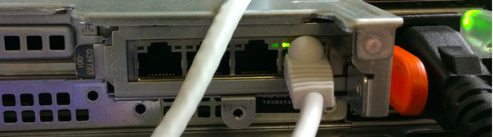Note
To get the IP address for a virtual appliance, start the appliance in VMware vCenter Server if it's not already powered on. The VM console will provide the IP address to access the Dashboard from a web browser, or you can enter the hostname to view the Dashboard.
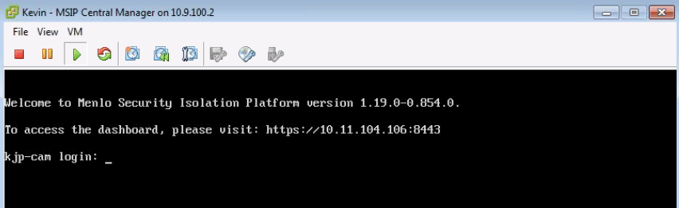Enter the Dashboard IP address in a web browser followed by :8443 (e.g.,
https://10.11.104.103:8443), and accept the self-signed certificate. This will be replaced later with a valid certificate.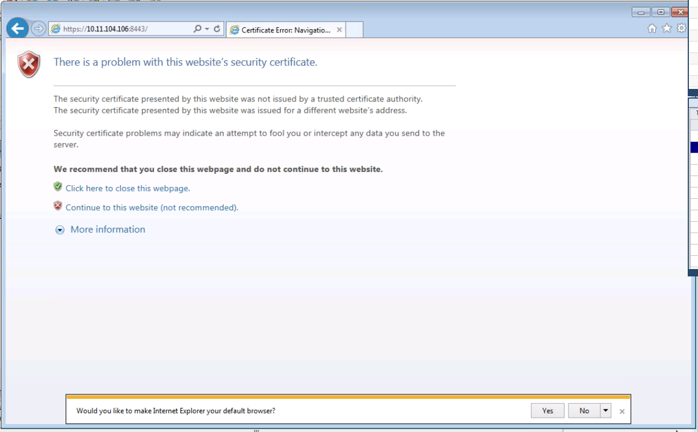Log into the Dashboard with the following account:
Username:
adminPassword:
password
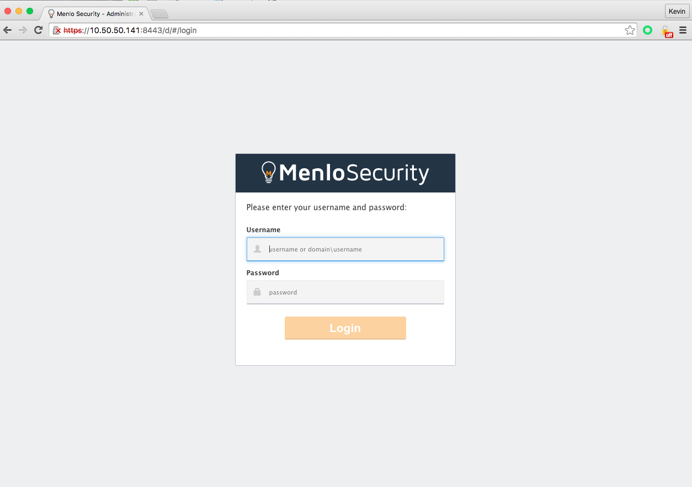You are immediately asked to change the password. Record the password, since it cannot be recovered if it is lost. Click OK to save the new password.
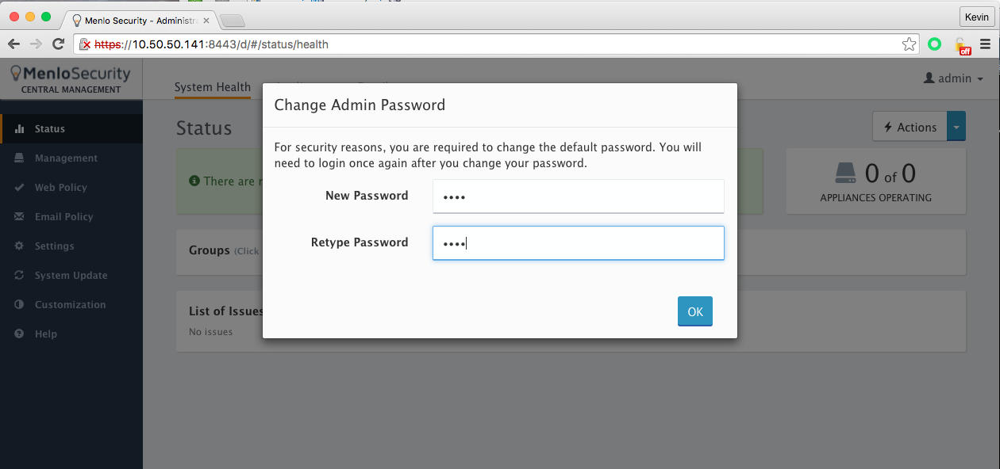Log in using the new admin password.
Open the Network Settings screen (Settings -> Network) to complete the configuration of the Central Manager appliance network settings. Update the Nameserver field and select Save when done.
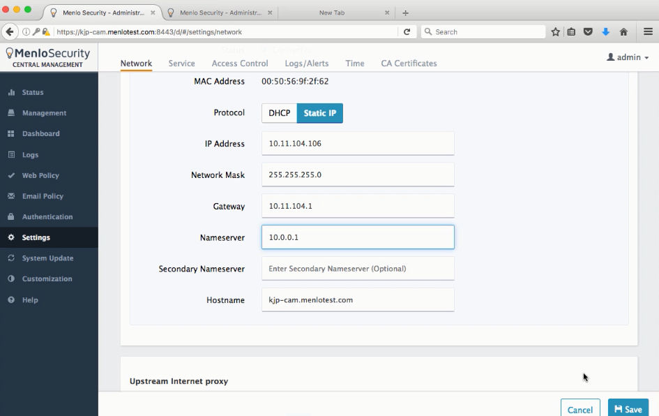The system requires a restart to accept the new settings. Click Confirm to reboot.
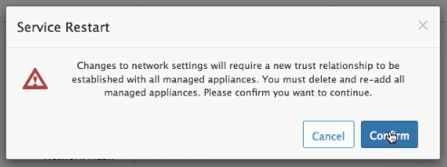After logging in again, open the Service Settings pane (Settings -> Service). Use the Browse button to find and the Upload button to upload a new certificate. Then select Save to save the new configuration. Another service restart is required.
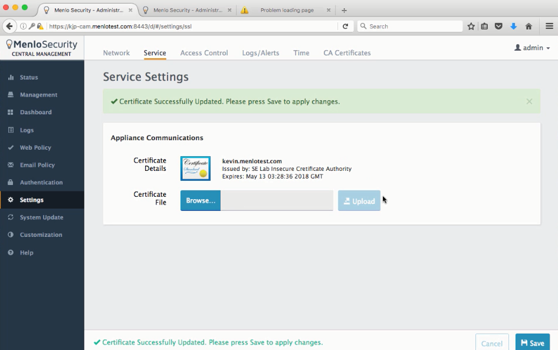Click the Browse... button to open the certificate file (.pem) on your system. Traffic is encrypted between the isolation appliances and the Central Manager as well as web browsers and appliances. This certificate is for appliance communications. Later you can install an SSL inspection certificate which will allow you to inspect https sessions your users initiate to web servers.
Note
The self-signed certificate should be replaced with a valid certificate to ensure you do not receive error messages when using the appliance FQDN while accessing the Isolation Platform via Static IP.
Click the Upload button to upload the file to your system.
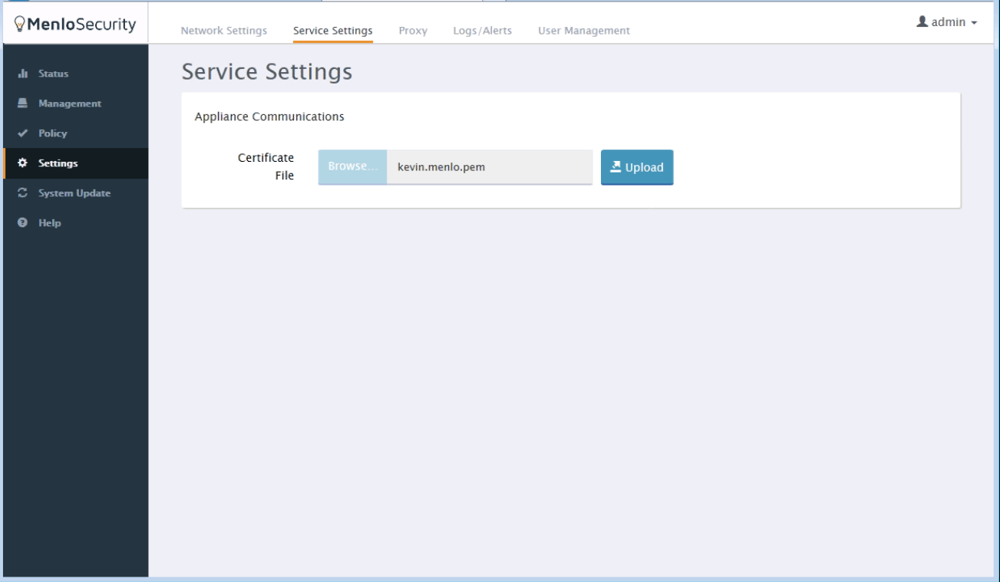The system requires another restart. Click Confirm to continue.
After logging in following the restart, note that the Secure Connection (lock) icon turns green, indicating that the certificate was accepted and the connection is secure.
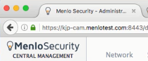Open the Time Settings pane (Settings -> Time) and use the Timezone menu to set the correct time zone for the appliance.
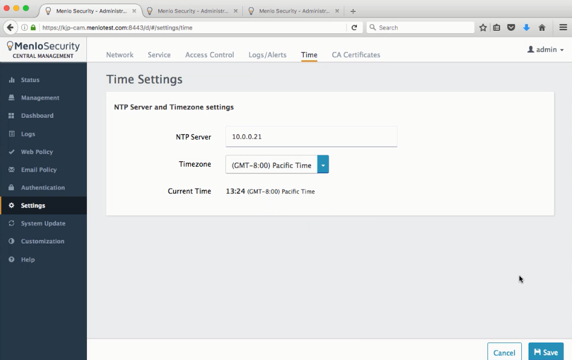You are now able to add and manage isolation appliances with the Central Manager.
Web Isolation Master and Isolation Worker Appliance Configuration
Obtain the IP address or Hostname for your appliance.
Enter the Dashboard address/hostname followed by :8443 (e.g.,
https://10.11.104.103:8443orhttps://YourCentralManagerName.com:8443), and accept the self-signed certificate. This will be replaced later with a valid certificate.Log into the Dashboard with the following account:
Username:
adminPassword:
password
You are immediately asked to change the password. Record the password, since the password cannot be recovered if it is lost. Click OK to save the new password.
Log in using the new admin password.
Open the Network Settings screen (Settings -> Network) to complete the configuration of the Isolation Manager/Worker appliance network settings. Update the Nameserver and select Save when done.
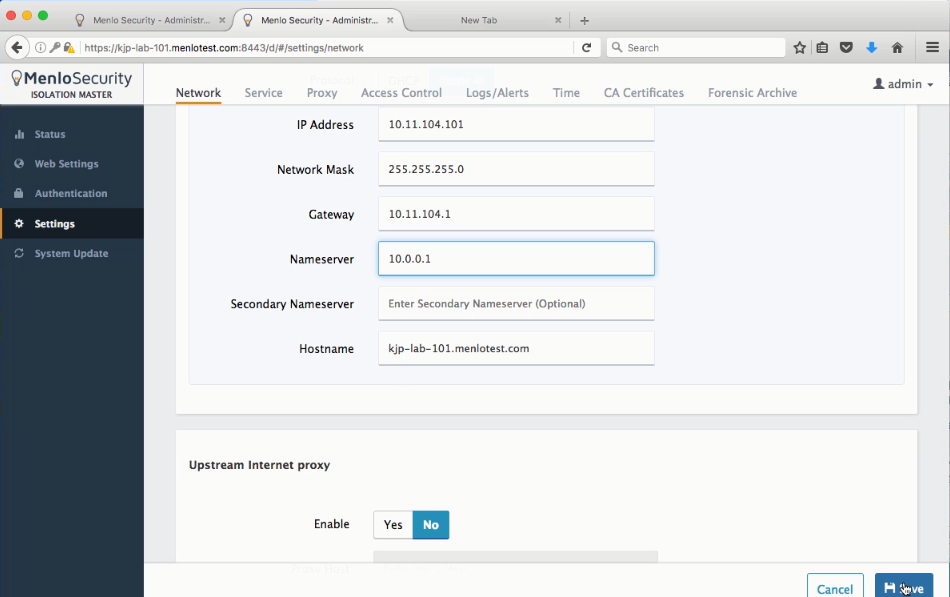Note
For more information about using templates to manage appliances, refer to central_manager_admin.dita. The nameserver and NTP server use the same addresses used by the Central Manager, if present.
The system requires a restart to accept the new settings. Click Confirm to reboot.
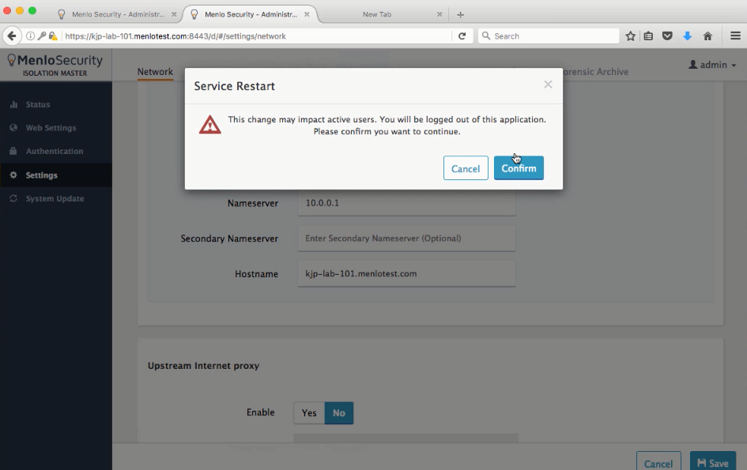Log in and open the Web Settings pane (Web Settings). Set the following toggles to Yes to allow the MSIP to control file downloads and uploads. This is required for both Isolation Master and Isolation Worker appliances:
File Downloads
File Uploads
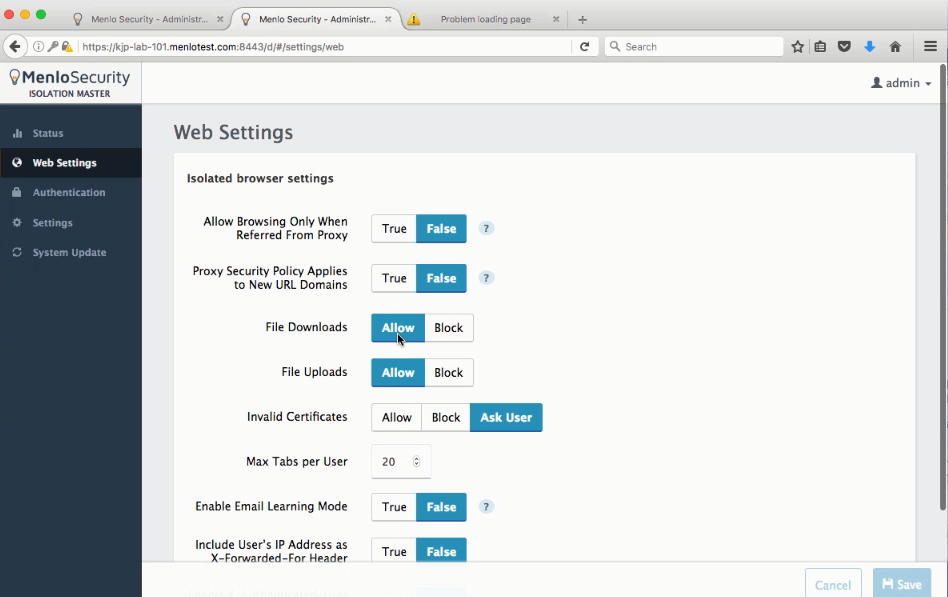Open the Service Settings pane (Settings -> Service). Use the Browse button to find and the Upload button to upload a new certificate. Then select Save to save the new configuration. Another service restart is required.
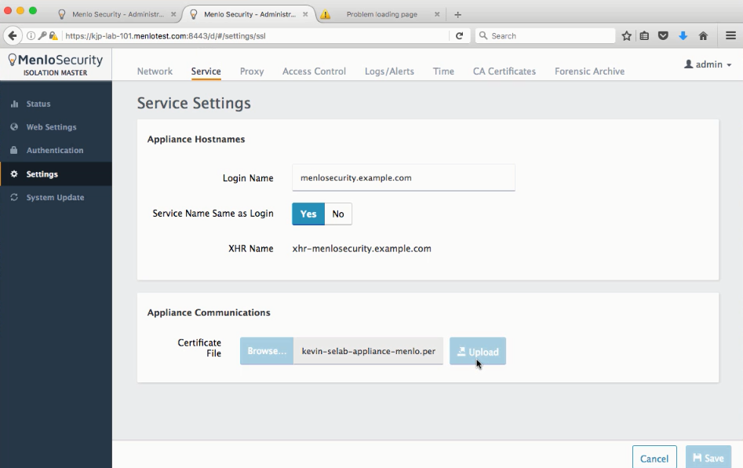Note
The self-signed certificate should be replaced with a valid certificate to ensure you do not receive error messages when using the appliance FQDN while accessing the Isolation Platform via Static IP.
After logging in following the restart, note that the Secure Connection (lock) icon turns green, indicating that the certificate was accepted and the connection is secure.
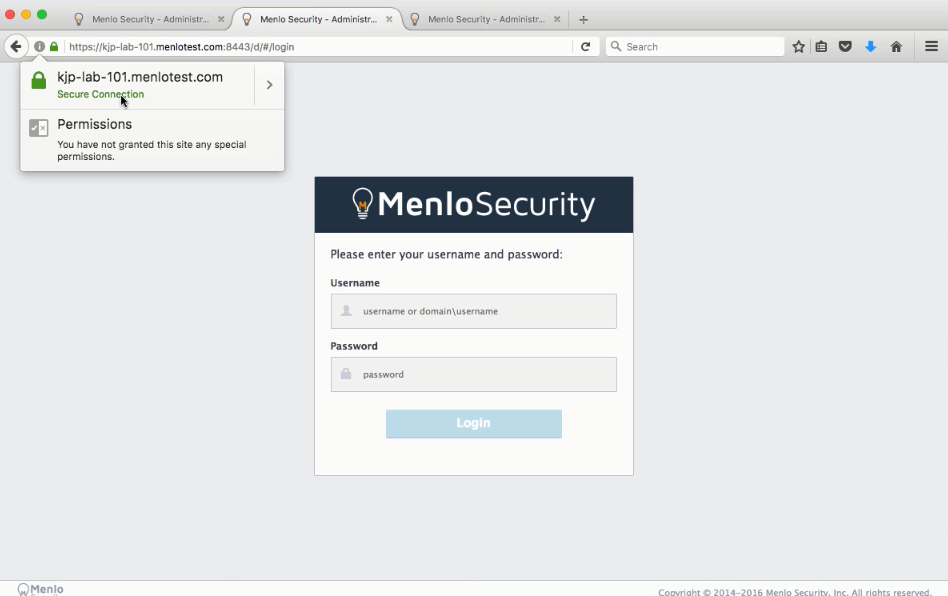Next, input your chosen names into the Appliance Hostnames form on the Service Settings pane (Settings -> Service Settings). All the hostnames must be configured in DNS and be present in the appliance's certificate alt-names.
Login Name: This is the name users will see for the isolation appliance. In most cases, this name can also be used as the Service Name. However, in deployments where a logical name spans several clusters (e.g., a DNS geographic routing configuration), the Login Name may be set to a global name, and the Service Name will be region specific.
Service Name: This name is used for the MSIP ACR sessions used to manage the isolation session. If the same name is used for login, set this to Yes.
XHR Name: This name is derived from the Service Name and is also used for MSIP ACR sessions.
IE Zone Authorization: This is an optional configuration which allows MSIP authorization across IE integrity levels. If the site being accessed is in a different integrity level than the MSIP authorization cookie, the request cannot be authorized. This setting passes the MSIP cookie into another integrity level, allowing MSIP sessions to be authorized. The domain name used here must also be configured in IE settings to associate it with the needed integrity level. For example, if the appliance Login Name is in the Internet zone, the IE Authorization hostname should be assigned to a zone in the medium integrity level (by default, Trusted Sites is in the medium integrity level).
Note
IE keeps separate cookie stores per integrity level, and an additional flag automatically puts any site that bypasses the proxy into the Internet zone. By default, sites in your Intranet are in the medium integrity level. Integrity level will be either low or medium for a zone, depending on whether protected mode is enabled for that zone.
Note
If you will always use proxy mode you don't need the IE Authorization Hostname to exist in your DNS. If you have prepend mode IE users, the users are redirected to the IE Authorization Hostname upon first login, and it must be configured in your DNS.
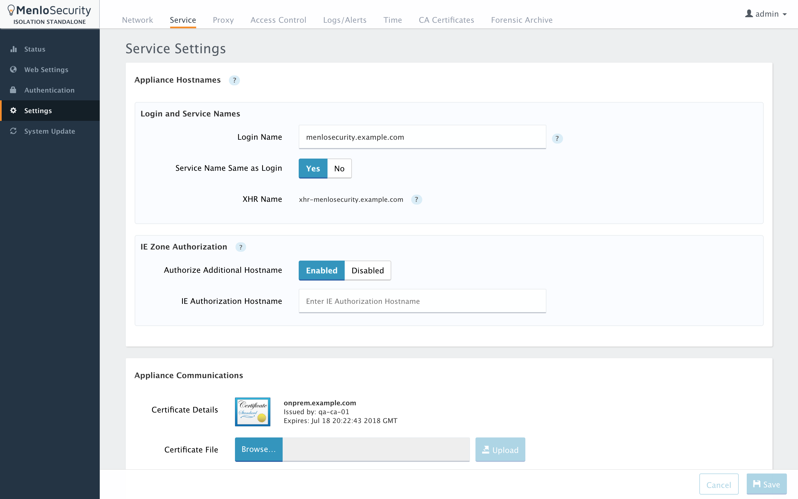Note
The service domain can be the same as the actual web isolation FQDN if you are doing a small POC (Manager and Web Isolation VM) or if you are proxy chaining. In a global pre-pend case you may want a generic service domain (safeweb.company.com) which will be routed to based on location/geo. After templates are set up and in use, the service domain can be managed via a template.
Log in using the new admin password following the system restart.
Open the Time Settings pane (Settings -> Time) and use the Timezone menu to set the correct time zone for the appliance.
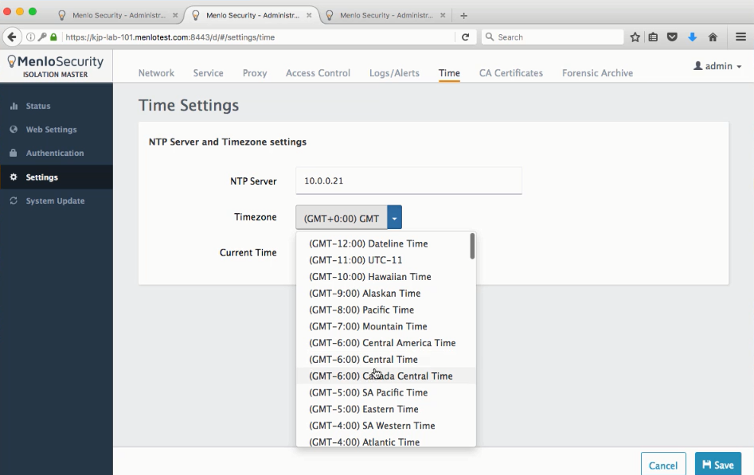For Isolation Master appliances, you can upload the SSL Inspection certificate on the Proxy Settings pane (Settings -> Proxy). Click the Browse... button to open the SSL Inspection certificate file (.pem) on your system and upload it. After uploading this the service restarts.
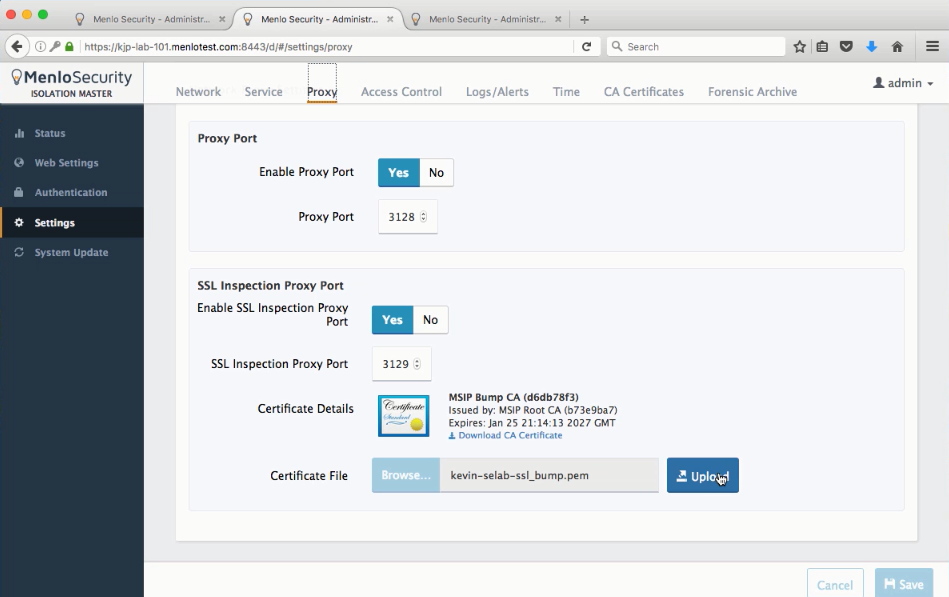The isolation appliances should now be ready to be managed with the Central Manager.
Email Isolation Appliance Configuration
Start the appliance in VMware vCenter Server. Note the address required to access the Administrator panel.
Enter the Administrator panel address in a web browser, and accept the self-signed certificate. This will be replaced later with a valid certificate.
Log into the panel with the following account:
Username:
adminPassword:
password
You are immediately asked to change the password. Record the password, since the password can not be recovered if it is lost. Click OK to save the new password.
The Dashboard opens to the Status pane.
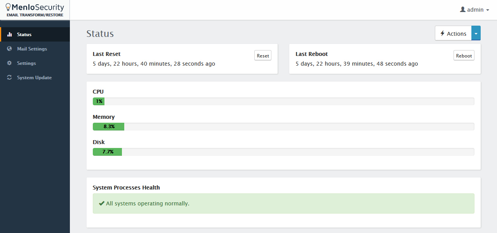Complete configuration of the Email Isolation appliance network settings using either the Network Settings pane (Settings -> Network Settings) or by using a Central Manager Template. The following are required:
Nameserver
NTP Server
Note
For more information about using templates to manage appliances, refer to central_manager_admin.dita.
The system requires a restart to accept the new settings. Click Confirm to reboot.
Open the Service Settings pane (Settings -> Service Settings).
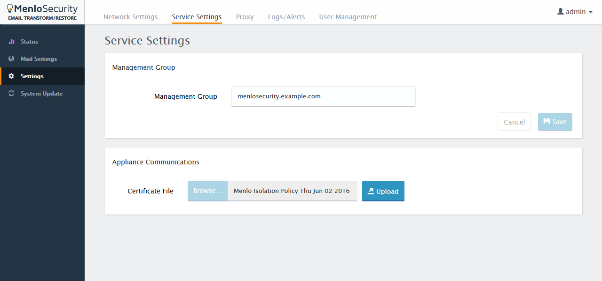By default the Central Manager groups systems according to their service domain. In an Email deployment the Email appliance doesn't have a service domain so you are given the option to enter a FQDN to group the systems (e.g., management-datacenter-1.company.com). This will allow automatic grouping by the manager.
Click the Browse... button to open the certificate file (.pem) on your system. Traffic is encrypted between the isolation appliances and the Central Manager as well as web browsers and appliances. This certificate is for appliance communications.
Note
The self-signed certificate should be replaced with a valid certificate to ensure you do not receive error messages when using the appliance FQDN while accessing the Isolation Platform via Static IP.
Click the Upload button to upload the file to your system.
The system requires another restart. Click Confirm to continue.
Log in using the new admin password to start using the Email Isolation appliance.
Verify Successful Deployment of Appliances
In the following steps you will add a Web Isolation appliance to the Central Manager and confirm that policy changes are successfully deployed when a user browses isolated and blocked web pages.
Test Creation and Distribution of Web Isolation Policy with the Central Manager
The following steps describe how to set up a simple cluster (one Central Manager, one Isolation Master, and one Isolation Worker) and test distribution of a web isolation policy to the appliances.
From the Central Manager Dashboard, open the Manage Groups pane (Management -> Groups). Select the Add Group button to add a new group. Enter the desired Name and set the Type toggle to "Cluster" for a cluster group. Click Save when finished.
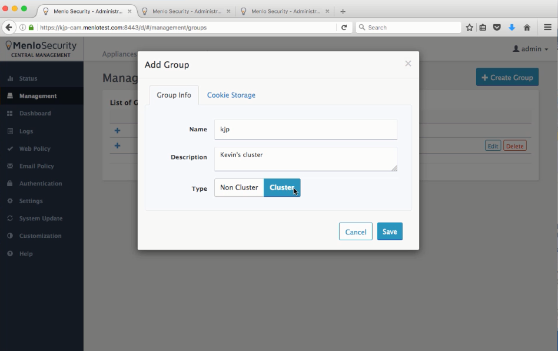Note
The Cookie Storage tab allows you to set up the server to manage cookies for all group members. In this example, we will skip this option, but the group can be edited at any time to add/update this information.
The new group will appear in the Manage Groups pane.
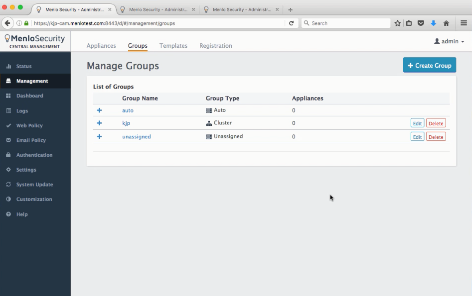Open the Manage Appliances pane (Management -> Appliances) and select the Add Appliance button to add the appliances to be managed by the Central Manager. In the Add Appliance window, enter the following:
Enter the Hostname. The port cannot be configured. Click Next to continue. In this example, we will start by adding an Isolation Master.
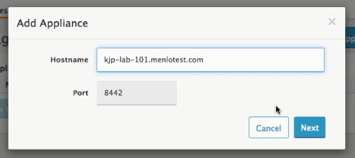Confirm the certificate against the appliance. Click Next to continue.
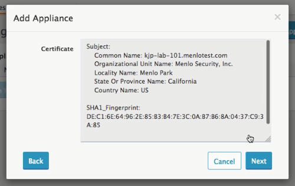Log into the appliance. Note that you must have already logged into the Web Isolation appliance at least once through the Dashboard to change the default admin password to one of your choosing. Click Next to continue.
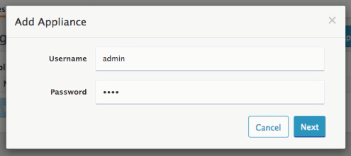Use the Group menu to select the group for the appliance. Click Add Appliance to continue.
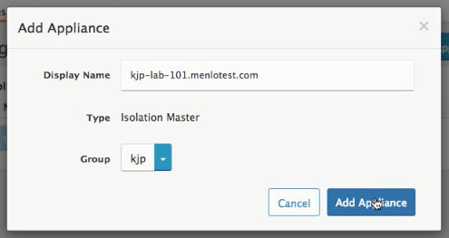The managed appliance is now displayed in the Manage Appliances pane.
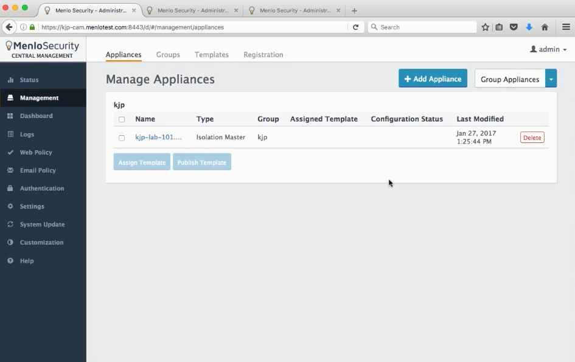
Repeat the above step to add an Isolation Worker.
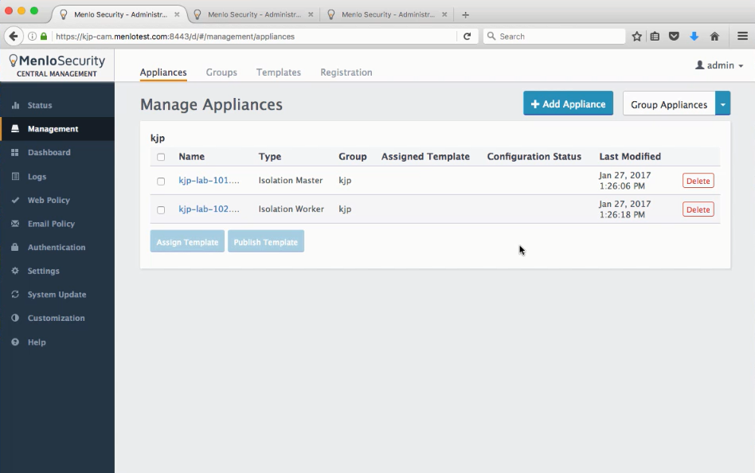To easily test policy management, open the Category Rules pane (Web Policy -> Category Rules) and pick one category to Block and a second category to Isolate. Other categories should be set to Allow. For example:
Block Alcohol & Tobacco sites
Isolate Education sites
Allow News sites
Note
Policies saved in the Central Manager are pushed to all appliances it is managing.
Click the Save Changes button to save the new rules.
Click the Publish button to implement the new rules.
Open a web browser and confirm it trusts the certificate authority (Active Directory or a .pem file). Refer to the following documents for more information about adding a CA certificate for testing purposes:
Confirm that the proxy server is working.
Select the new proxy server cluster, and confirm the proxy port is 3129.
Go to a website in the Block category and verify that the page is not loaded.
Go to a website in the Allow category, and view the page source to confirm the page is not isolated.
Go to a website in the Isolate category, and view the page source to confirm the page is isolated.
Open the Web Logs pane (Logs -> Web Logs) and confirm that logging information was gathered by the MSIP.
Refer to central_manager_admin.dita for more information about the screens provided for setting up user or group authentication, logging, using other policy types, and performing system updates.
Configuring FireEye AX on an OVA
The Menlo OVA can submit files to a FireEye appliance for analysis. To enable this, the Menlo OVA must be configured to direct files to the FireEye appliance.
From the Central Manager Dashboard, open the Edit Groups pane (Management -> Groups -> Group Edit button -> Sandbox -> FireEye) and select Enable to enable the FireEye appliance.
Next, open the Content Inspection pane (Web Policy -> Content Inspection).
Select the checkbox for the FireEye service name to enable the service.
Next, click the Edit button to configure the plugin. The following key settings should be configured:
Base URL: URL for the FireEye appliance
Username: Web Services Application Programming Interface (WSAPI) account username. This is a FireEye user account with the api_analyist role.
Password: Password for WSAPI account above
Types of Transfers to Send: Click the checkbox(es) for the types of transfers to send to the FireEye appliance (Downloads and/or Uploads).
Max Timeout: Total time allowed before plugin is aborted. Since the FireEye appliance has a limited number of concurrent analyses allowed, this allows file processing to be aborted if the file is not processed within the timeout period.
Max Size: Max size of files to submit
Action for Transfers Which Can't be Processed: What to do if the plugin encounters an error (e.g., timeout, network issues, etc.)
Action for Transfers Above Size Limit: What to do if the file is above the max size limit
Certificate: Root CA for the FireEye appliance. The appliance uses a self-signed certificate to secure the https connection, so the CA must be provided to the Menlo OVA to validate the connection. The certificate can be exported from the FireEye appliance dashboard. Once exported, use
cat(or another command) to view the file in an editor and copy-paste the contents.Profiles (optional): Defines the list of guest images (OS profiles) available to the FireEye appliance to submit the file to. If empty, files are submitted to all. The full list is available from the FireEye appliance dashboard (Guest Images).
Analysis Type: Sandbox or Live analysis. Sandbox analysis simulates L/WAN access, and Live analysis will allow the FireEye appliance to communicate outside the FireEye appliance.
Analysis Duration: Duration (in minutes) that the file is sandboxed for analysis
Click Save Changes when finished editing the configuration.
Note
Once the FireEye plugin is enabled, all files passing through the MSIP are submitted to the FireEye appliance for analysis. This is unlike the cloud sandbox that only submits files that "fail" the local scan. Note that FireEye processing will significantly extend the duration between requesting a file download and the receipt of the file.
File analysis requires the WSAPI to be enabled using the Menlo Command Line Interface (CLI). The Menlo FireEye AX has already been enabled. To enable the WSAPI service log in as an administrator and enter the following commands:
en // enable conf t // configure terminal wsapi enable // enable wsapi service wr mem // write memory
When a file is submitted to the FireEye AX, an indicator is provided that notes the file download will take the analysis duration. If there are connectivity issues, this is noted at approximately 5 minute intervals in the operational logs. In a future release the FireEye analysis outcome will be reported in the Logs pane.
Command Line Interface (CLI)
The MSIP also provides a Command Line Interface (CLI) that can be used for basic configuration and troubleshooting of the MSIP. This can only be used after the appliances have been created and deployed. For more information the commands available through the CLI, refer to ???.